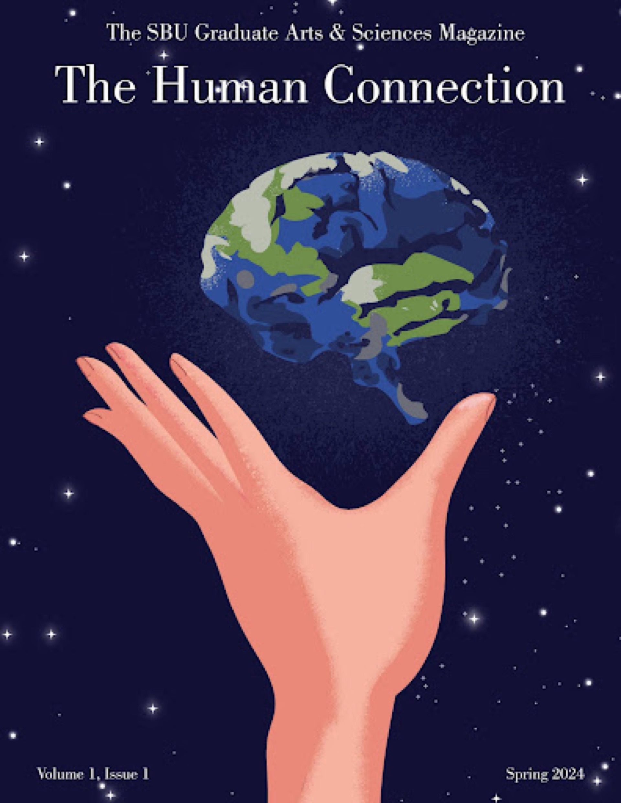

Our inaugural edition explores the threads that bind us together as scholars and humans. Featuring research articles, creative writing, poetry, and art from Stony Brook's graduate community.
The Human Connection marks the beginning of our journey as Stony Brook's graduate arts and sciences magazine. This edition brought together voices from across disciplines to explore what connects us as researchers, creators, and community members. From scientific discoveries to personal essays, from poetry to visual art, this issue celebrates the diversity of graduate scholarship at Stony Brook University.